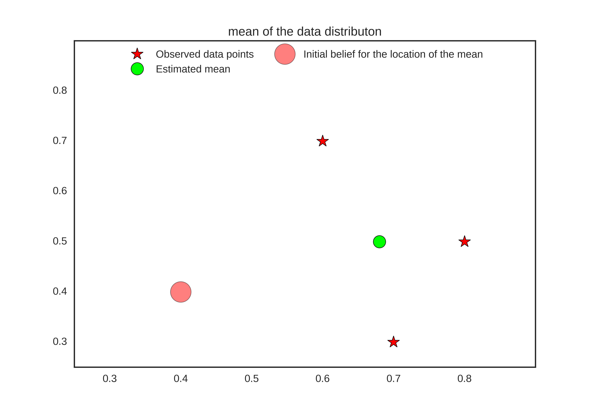
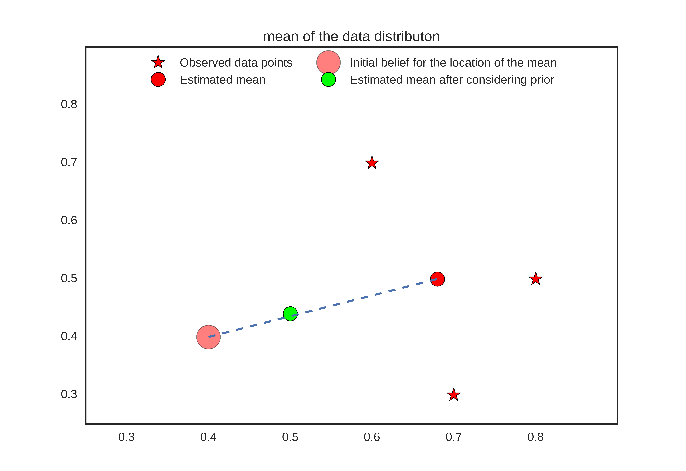

Introduction
Regularization techniques are a widely explored topic in machine learning that is used for improving generalization accuracy or reducing the overfitting of the data in a machine learning model. Regularization strategies involve either imposing a hard (or explicit) constraint or a soft (or implicit) constraints on the parameters of the model. Ridge regularizer (often referred to as $L2$) and Lasso regularizer (often referred to as $L1$) are some of the explicit regularizers that impose a direct constraint on the parameter. For example, $L1$ constraints the parameters in a space such that most of the parameter values equal to zero. Implicit regularization approach imposes a soft constraint on the parameters by modifying the optimization function. A popular approach called dropout is an example of such implicit regularizer that tunes the values of the parameters by the means of optimization function.
The goal of this article is neither to list down the regularization techniques commonly used in machine learning nor is to describe when and how the regularizers are being used, but to take a step back and understand the importance of prior (an expression of our belief on the values of the parameters) that is embodied in any regularization approach. Towards this end, we will look into two fundamental approaches of parameter estimation methods namely “Maximum Likelihood Estimation (MLE)” and “Maximum a Posteriori (MAP)” and see how the later approach regularizes the model better by using prior knowledge about the estimate. We will start with the first approach, MLE.
MLE Overfits
Any meaningful data has some underlying statistical property. For any data we get, it is reasonable to assume that there exists a data generating distribution that has generated the subset of available data. Our objective is to infer the distribution by analyzing the hidden statistical property in the observed data.
Let us assume that the available data is given by $D$ where $D$ = $(x_{1},x_{2},…,x_{n})$ and each $x_{i}$ corresponds to $i^{th}$ data point and $x_{i}$ $\in$ $\mathbb{R}^{d}$. Furthermore, we assume that each data point is being generated independently by a common data generating distribution denoted by $P(X/\theta)$ or in other words, each data point $x_{i}$ is sampled from a random variable $X_{i}$ $\sim$ $P$.
We intend to estimate the true parameter $\theta$ of the assumed data distribution. MLE approaches this problem by maximizing the likelihood function $P(data/\theta)$, or more formally $$ \begin{equation} \theta_{MLE} = \operatorname*{arg\,max}_\theta P(X_{1}=x_{1},X_{2}=x_{2},…,X_{n}=x_{n}/\theta) \end{equation} $$
Since it is assumed that the data distribution are identical and independent, by using the conditional independence rule (conditioned on $\theta$) on the joint probability distribution (over $X_{i}$), we get $$ \begin{equation} \theta_{MLE} = \operatorname*{arg\,max}_\theta \prod_{i=1}^{n}P(X_{i}/\theta) \end{equation} $$
Taking a concrete example of data distribution, we can derive the maximum likelihood estimate. Lets suppose that data follows a Gaussian distribution (which is a reasonable assumption for scalar data points), and the parameters we are interested in is the mean (denoted by $\mu$) where we keep the variance (denoted by $\sigma^{2}$) a constant, i.e. $X_{i}$ $\sim$ $\mathcal{N}(\mu , \sigma^{2})$. Here, the only parameter we want to estimate is the $\theta = \mu$.
Following the Gaussian density function for the given data distribution and the Independent and identically distributed (IID) assumptions, from previous equation we get $$ \begin{equation} \theta_{MLE} = \operatorname*{arg\,max}_\theta \left ( \frac{1}{\sqrt{2\pi\sigma^{{2}}}} \right ) exp\left ( -\frac{1}{2\sigma^{2}}\sum_{i=1}^{n}(x_{i} - \mu)^2 \right ) \end{equation} $$
Since the logarithm is a monotonically increasing function, we can maximize $\log$ of the right side expression and equivalently get the parameter of interest.
$$
\begin{align}
\theta_{MLE} & = \operatorname*{arg\,max}_\theta \log P(data/\theta) \\
& = \operatorname*{arg\,max}_\theta -\frac{n}{2}\log(2\pi\sigma^2) - \frac{1}{2\sigma^2}\sum_{i=1}^{n}(x_{i} - \mu)
\end{align}
$$
fetches us $\mu$ = $\frac{\sum_{i=1}^{n}x_{i}}{n}$ which is the sample mean. Here we can see that if the dataset is small, the MLE estimate memorizes both the signal and the noise from the data even if we may have some idea of where the parameter should lie.
An apt representation of this is idea is shown in the figure below.

When the number of parameter increases and the number of data point remains small, the MLE estimates a complicated function that more often tries to fit the noise present in the data and diverges from the actual data distribution. In the next section, we will see how the MAP estimate overcome this drawback by introducing something called “prior”.
MAP Regularizes
Our problem statement remains the same as that of MLE, but our assumptions about the underlying statistical properties of the data is a bit different. We now assume that we have a full knowledge about the joint distribution of data and the underlying data distribution’s parameter, as denoted by $P(X_{1}, X_{2},…,X_{n},\theta)$. Here, we note that the $\theta$ is now a random variable. Although $\theta$ is a random variable now, MAP estimates are the point estimates that evaluate the parameter that maximizes a certain condition, in this case it is the posterior distribution of $\theta$ given the data. Formally,
$$
\begin{align}
\theta_{MAP} & = \operatorname*{arg\,max}_\theta P(\theta/X_{1},X_{2},…,X_{n})\\
& = \operatorname*{arg\,max}_\theta \frac{P(X_{1}, X_{2},…,X_{n},\theta)}{P(X_{1}, X_{2},…,X_{n})}\\
& = \operatorname*{arg\,max}_\theta P(X_{1}, X_{2},…,X_{n}/\theta)*P(\theta)
\end{align}
$$
using proportionality and Bayes theorem. Taking log and using IID assumption on right-hand side of the expression, we get $$ \begin{equation} \theta_{MAP} = \operatorname*{arg\,max}_\theta \sum_{i=1}^{n}\log P(X_{i} = x_{i}/\theta) + \log P(\theta) \end{equation} $$
We again take a concrete example by assuming a joint distribution of data and parameter. Alternatively, we assume that the conditional data distribution conditioned on parameter $\mu$ follows $\mathcal{N}(\mu, \sigma^{2})$ where $\theta = \mu$, $\sigma$ is kept as a constant and the parameter $\mu$ is distributed normally with mean $\mu^{*}$ and a variance of 1 i.e. $\mu$ = $\theta$ $\sim$ $\mathcal{N}(\mu^{*}, 1)$. Under these univariate Gaussian assumptions for data and parameter, we can maximize the logarithm of the posterior to estimate the point estimate for $\theta$. $$ \begin{align} \theta_{MAP} = \operatorname*{arg\,max}_\theta & \left ( \frac{1}{\sqrt{2\pi\sigma^{{2}}}} \right ) exp\left ( -\frac{1}{2\sigma^{2}}\sum_{i=1}^{n}(x_{i} - \mu)^2 \right ) + \\\ & \left ( \frac{1}{\sqrt{2\pi}} \right ) exp\left ( -\frac{1}{2}(\mu - \mu^{*})^2 \right ) \end{align} $$
Differentiating the right-hand side and equating it to zero, the expression evaluates to $$ \begin{equation} \frac{1}{\sigma^{2}}\left ( \sum_{i=1}^{n}(x_{i}-n\mu)^{2} \right ) + (\mu^{*} - \mu) = 0 \end{equation} $$ Rearranging the $\mu$ on one side, we get $\mu = \frac{\sum_{i=1}^{n}x_{i}}{\sigma^2 + n} + \frac{\sigma^{2}}{\sigma^{2}+n}\mu^{*}$ Since, $\overline{x} = \frac{\sum_{i=1}^{n}x_{i}}{n}$ is the sample mean, we can write the above equation as $$ \begin{equation} \theta_{MAP} = \frac{n}{\sigma^2 + n}\overline{x} + \frac{\sigma^{2}}{\sigma^{2}+n}\mu^{*} \end{equation} $$ From the above expression, we can see that the $\theta_{MLE}$ is a convex combination of sample mean $\overline{x}$ and the prior mean $\mu^{*}$. The prior mean $\mu^{*}$ reflects our prior belief about where the mean should be before we observe any data. When the number of data points are less, more weightage is given on the prior mean which helps in achieving regularization through reducing the data overfitting. In an extream case where $n \rightarrow \infty$, $\frac{n}{\sigma^2 + n} \rightarrow 1$ and $\frac{\sigma^{2}}{\sigma^{2}+n} \rightarrow 0 $, the parameter estimation is dominated by sample mean (which will reasonably estimate the actual parameter of the data distribution). When the number of data points are sufficient, the parameter estimate is well guided by the observed data, otherwise we partially rely on our prior knowledge of what value a parameter should assume.
Refer the figure below for an intuitive understanding. 
Summary
In this article, we explored two fundamental parameter estimation algorithm namely Maximum Likelihood Estimation and Maximum a Posteriori. By taking concrete examples of the distribution (along with several reasonable assumptions), we argued that MAP estimates induce regularization through prior over the parameters.
In a traditional Bayesian setup, a prior is explicitly modeled, but in a deep learning setting, this may take several forms. Whatever be the case, prior knowledge induces better inductive bias and this can be achieved through designing the architecture, curating of the training data and the choosing a better optimization objective. A more direct approach of imposing the prior for regularizing a model can be seen in the process of distillation. A teacher network is trained without any prior data, and when it is trained, the knowledge (in terms of prior) is distilled in the student network. Formulating a better and more explicit approach to induce prior in deep learning systems is an active area of research which we will explore further in subsequent articles.